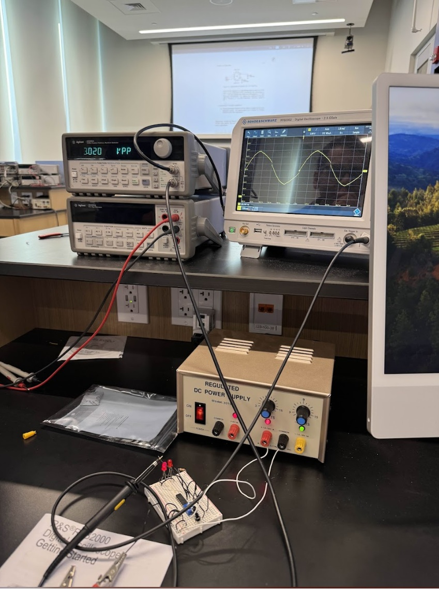
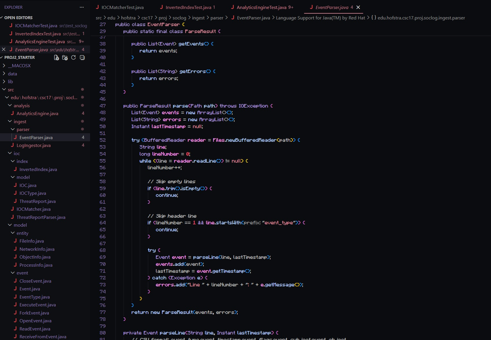
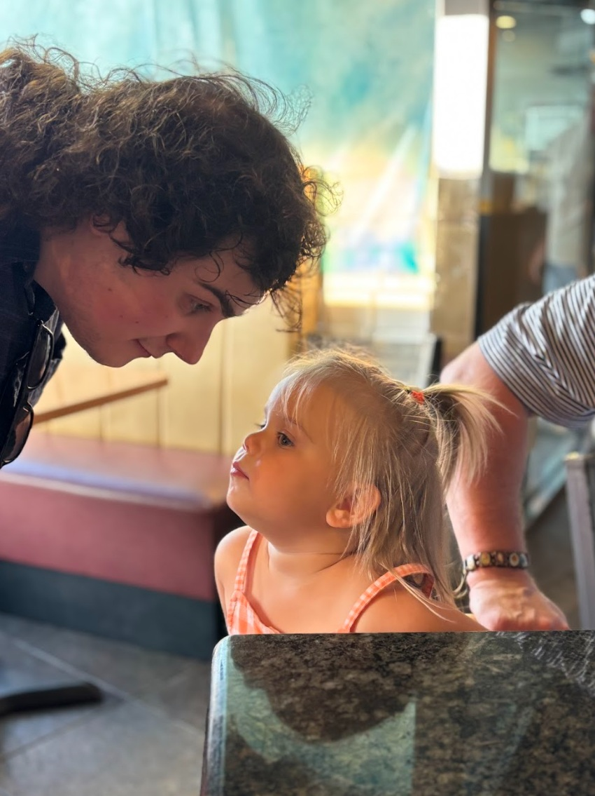
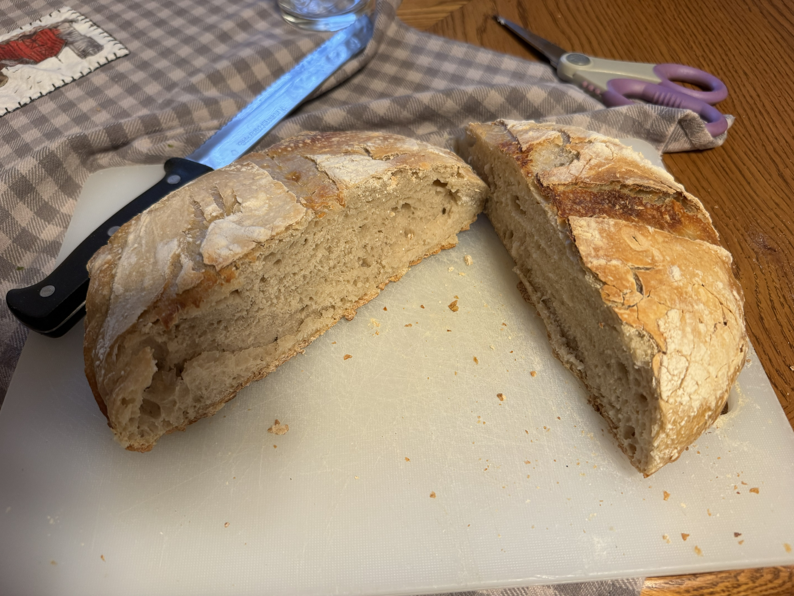

An Oscilloscope

Work
In my time I have become educated on multiple topics related, but not limited to, computer science, the Microsoft Office Suite, and information systems. My experience includes the following languages:
- Python
- C/C++
- Java
- HTML
- CSS
Java IOC Parser

My Niece & I

Interests
Outside of my academic and professional pursuits, I have a variety of interests. I enjoy cooking and baking, and while most of my recipes are Italian, I have multiple experimental dishes from multiple different cultures. I also enjoy reading in my free time, particularly sci-fi horror and fantasy novels.
Sourdough Bread
